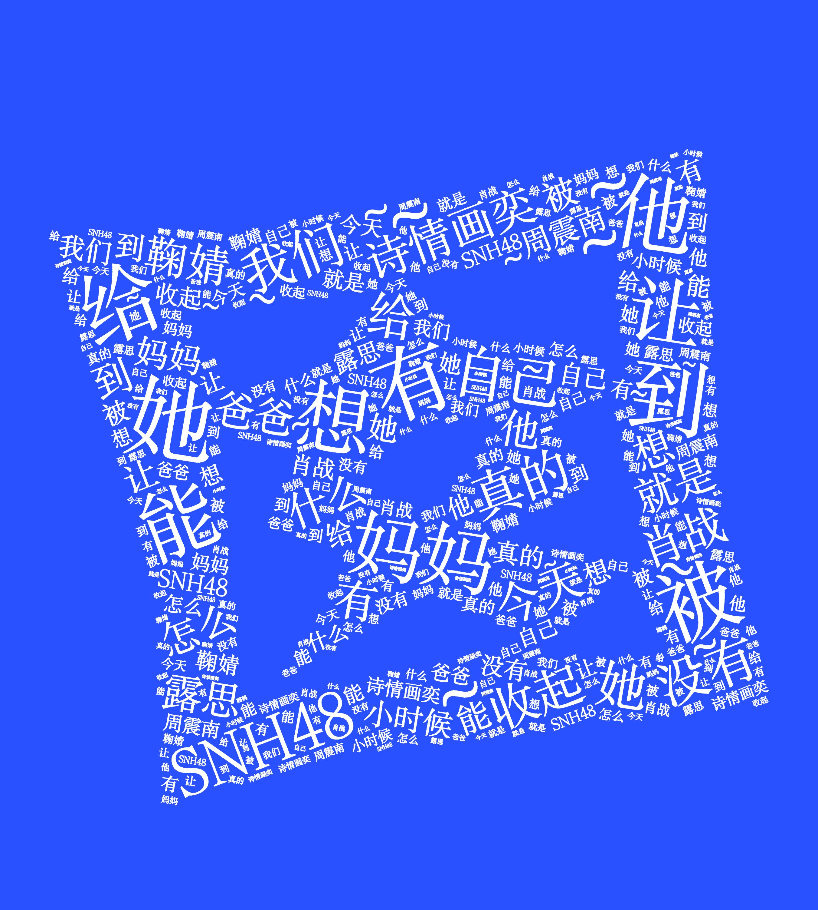

新盐要闻 | 说说吴语故事
XINYAN
BAY
BAY
囡囡
囡，读作nān，是典型的、知名度较高、常用的的吴语方言。起初是苏南、浙江、上海等吴语地区对儿女的称呼，如:小囡，囡儿([方言]∶女儿)，囡仵([方言]女孩)，囡大细([方言]∶子女)，也指小女孩，或泛指小孩子。 类似“囡”，吴语有数万个特有词汇和诸多特征本字，每一个词汇和字都有独特的读音，是江南人思维方式、生活情调、文化涵养、社会生产、风俗民情、语言习惯的生动体现。 使用python在新浪微博上以关键词“囡囡”爬取500余条博文进行分词，并绘制词云图，从高频词来感受吴语方言在如今社交媒体上的使用习惯。

下边栏结束